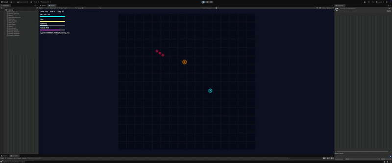

Add assets/arena-demo.gif — 10–15 s gameplay clip
MSc dissertation · UCL · 2025 · supervised by
Prof. Graham Roberts
Deep RL for Weapon-Design Insights in a 2D Arena-Combat Game
- Developed a top-down 2D arena survival game in Unity C#, where the player makes decisions on weapon deployment and movement.
- Built a RL pipeline with observation and reward for step interaction inside the game , and implemented PPO in PyTorch for agent training.
- Escaped local optimal behaviour such as corner-camping through reward design and hyper parameter tuning, increased survival time.
The trained agent discovered weapon synergies and complex tactics, demonstrating RL's potential as a design assistant for emerging game mechanics.